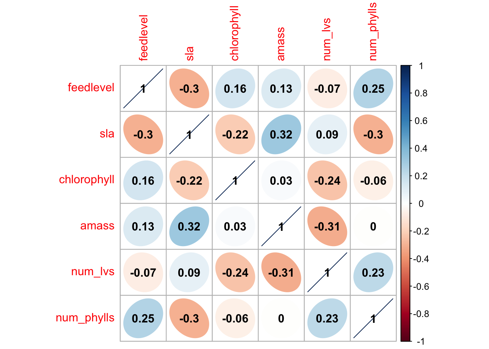

# should haveslibrary(tidyverse)library(here)library(janitor)library(ggeffects)library(performance)library(naniar) library(flextable) library(car)library(broom)# would be nice to havelibrary(corrplot)library(AICcmodavg)library(GGally)
Read in the data:
Code
plant <-read_csv(here("data", "knb-lter-hfr.109.18", "hf109-01-sarracenia.csv")) %>%# make the column names cleanerclean_names() %>%# selecting the columns of interestselect(totmass, species, feedlevel, sla, chlorophyll, amass, num_lvs, num_phylls)
Visualize missing data:
Code
gg_miss_var(plant)
Sub-setting data by dropping N/A’s (missing data):
(ex writing) To determine the relationships between numerical variables in our data set, we calculated Pearson’s r and visually represented correlation using a correlation plot.
Code
# calculate Pearson's r for numerical values ONLYplant_cor <- plant_subset %>%# all column b/w feedlevel and num_phyllsselect(feedlevel:num_phylls) %>%# cor() = correlationcor(method ="pearson")# creating a correlation plotcorrplot(plant_cor, #change the shape of what's in the cells method ="ellipse",#adding variables over shape addCoef.col ="black")

Create a plot of each variable compared against the others:
(example) To determine how species and physiological characteristics predict biomass, we fit multiple linear models.
Code
# use 1 as the predictornull <-lm(totmass ~1, data = plant_subset)full <-lm(totmass ~ species + feedlevel + sla + chlorophyll + amass + num_lvs + num_phylls, data = plant_subset )
We visually assess normality and homoskedasticity of residuals using diagnostic plots for the full model.
Code
par(mfrow =c(2,2))plot(full)
Code
# and talk about how they spread
We also tested for normality using the Shapiro-Wilk test (null hypothesis: variable of interest (i.e. the residuals) are normally distributed).
We tested for homoscedasticity using the Breusch-Pagan test (null hypothesis: variable of interest has constant variance).
Code
check_normality(full)
Warning: Non-normality of residuals detected (p < .001).